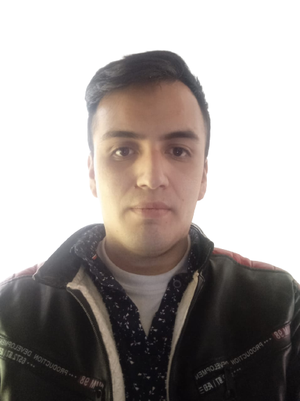

Hola, mi nombre es Camilo Palacios
y construyo paginas web
Soy Tecnologo en soporte informatico y actualmente estoy participando del proyecto Oracle ONE en Alura Latam.
Github LinkedIn Curriculo

Sobre Mi
Tecnólogo en Sistemas con 2 años de experiencia en infraestructura y mesa de ayuda, atención remota/en sitio y operación en datacenter. Poseo amplia experiencia en sistemas operativos Windows y Linux, así como en programas como Office 365. Además, cuento con habilidades en HTML, CSS y JavaScript, lo cual me permite desarrollar soluciones web de calidad.
Camilo Palacios